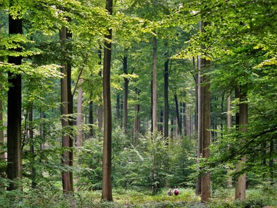

Strony HTML rzadko występują w izolacji. Zwykle mają też hiperlinki do innych stron, albo obrazy. Dziś wyjaśnimy sobie te rzeczy.
Odnośniki
Odnośniki to nic innego, jak po prostu linki do innych stron. Robi się to za pomocą tagu <a> z atrybutem href="...". Linki mogą prowadzić do stron publicznych:
<a href="https://youtube.com">Ten link prowadzi do Youtube.</a>
...lub do podstron. Mogą być adresowane względnie...
<a href="./wprowadzenie.html">Wracaj do Wprowadzenia, leniu!</a>
...lub bezwzględnie...
<a href="C:/Users/Adrian/Pulpit/html_samouczek/src/wprowadzenie.html">Wracaj do Wprowadzenia, leniu!</a>
...choć to ostatnie prawdopodobnie nie działałoby się na waszym komputerze.
Kotwice
Kotwice to specjalny spobób, który umożliwia przeniesienie się do innej części strony za pomocą <a>.
Po pierwsze trzeba wymyśleć nazwę kotwicy. Musi ona mieć tylko litery i podkreślenia. Po drugie, trzeba umieścić ją w atrybucie id, który trzeba umieścić w docelowym znaczniku. Jeśli w miejscu docelowym nie ma znacznika, użyj <span>.
<znacznik id="kotwica" >
Po trzecie, umieść w href w swoim znaczniku <a> "#" i nazwę kotwicy:
<a href="#kotwica">...</a>
Kotwica jest gotowa. Można też umieścić link do kotwicy znajdującej się na innej stronie:
<a href="sciezkapliku#kotwica">...</a>
Formatowanie linków
Po pierwsze, linki są zwykle podkreślone. Jeśli chcesz coś z nimi zrobić specjalnego, zalecam usunąć je za pomocą text-decoration: none;.
Po drugie, zapewnie Czytelnik zauważył, że linki zmieniają kolor w zależności od tego, czy w nie kliknięto, czy nie. Można to kontrolować za pomocą tzw. pseudoklas.
:linkwybiera linki, które nie zostały kliknięte.:hoverwybiera elementy, na które najechała myszka.:focuswybiera elementy, które zostały zaznaczone za pomocą Tab lub które są w trakcie bycia klikanymi.:activewybiera elementy, które są w trakcie bycia klikanymi.:visitedwybiera linki, które zostały kliknięte.
Domyślne kolory linków w większości przeglądarek to:
a:link { color: #0000EE; }
a:hover { color: #0000CC; }
a:active { color: #EE0000; }
a:visited { color: #551A8B; }
Obrazy
Obrazy można stworzyć poprzez tag <img>. Tag ten ma dwa główne atrybuty:
- Atrybut
src, który wskazuje na plik, w którym jest przechowywany obraz. - Atrybut
alt, który określa napis, który pojawi się po najechaniu na obraz, a także zostanie wymówiony w trybie dla niewidomych.
<img src="../img/forest.jpg" alt="Zdjęcie lasu">

Obrazy mogą też po kliknięciu prowadzić do innej strony; w tym celu trzeba zamknąć <img> w <a>:
<a href="youtube.com"><img src="../img/forest.jpg" alt="Zdjęcie lasu które prowadzi do Youtube"></a>